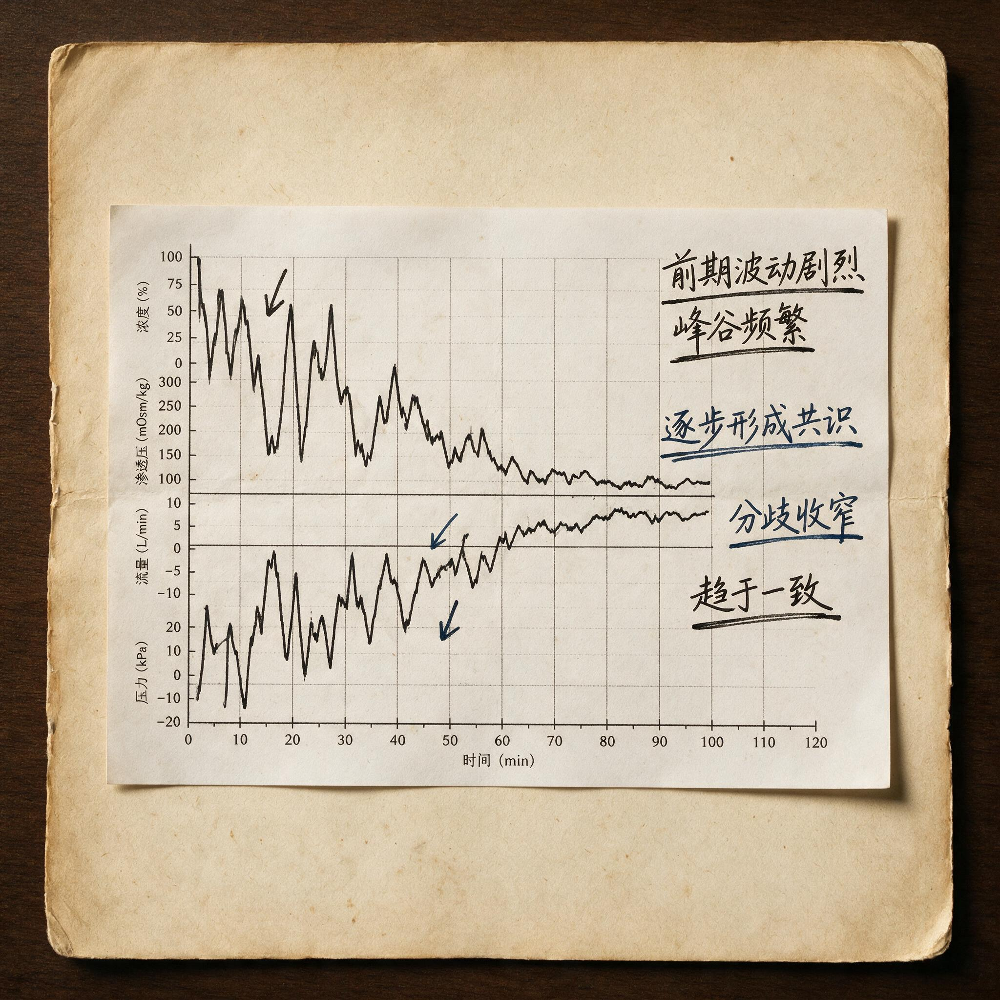

第 9 章
一致的形成
2023年4月18日，深圳证券交易所的公开信息披露平台上，一份龙虎榜文件准时挂出。表格上方，标的证券名称“拓维信息”与日期赫然在列。买入前五席位合计净买入约1.8亿元，卖出前五席位合计净卖出约2.1亿元，整体呈现净卖出。
“格局到顶”的帖子还挂在首页上。“没上车的人只能追高”的回复还在被点赞。但股价已经开始下跌了。
从“还能买吗”到“格局到顶”再到“是洗盘还是见顶”——这三个阶段的情绪演变精确地映射了情绪周期中从分歧到一致再到退潮初期的完整路径。“还能买吗”对应的是分歧期的犹豫；“格局到顶”对应的是一致期的确信；“是洗盘还是见顶”对应的是退潮初期的困惑——持仓者无法判断下跌是暂时的洗盘还是趋势的反转。
困惑本身就是亏损的信号。当一个持仓者无法判断下跌的性质时，他最可能的反应是按兵不动——等待更多信息来确认方向。但退潮期的下跌往往不给人等待的机会。等到信息足够确认方向时，亏损已经大到无法轻易割舍了。
一致阶段的盈利来自分歧期对共识方向的正确判断。这句话的反面是：一致阶段的亏损来自把共识的强度误认为共识的持续性。共识的强度是可以观测的。封单量、成交量、跟风股联动性、论坛热帖情绪、龙虎榜席位行为——这些指标可以在一致日给出一个明确的读数：共识很强。
这就像体育比赛中的“加时赛”——常规时间（分歧期）未能分出胜负，市场需要一段额外的、高强度的博弈时间（一致期）来确立方向。但加时赛的规则是“突然死亡”：任何一方率先得分（出现明确的共识信号）便立即获胜。这种机制的残酷性在于，它压缩了决策时间，放大了单次行动的后果，让参与者对“确定性”的渴求达到顶峰。
拓维信息4月18日的封单量6000万股是一个客观数据；跟风股延迟从五分钟压缩到三十秒是一个可量化的变化；论坛热帖从“还能买吗”变成“格局到顶”是一个可记录的情绪转变。
但共识的持续性是不可观测的。没有人知道今天的6000万股封单明天会不会变成600万股的恐慌抛压。没有人知道那些今天喊着“格局到顶”的人明天会不会变成“止损出局”的人。没有人知道今天同步联动的跟风股明天会不会变成同步跳水的领跌股。
把强度误认为持续性——这是认知博弈中最致命的错误之一。它源于一个深层的心理机制：人类大脑倾向于将当前的感受投射到未来。当我此刻感到确定时，我会默认未来也是确定的；当我此刻看到共识很强时，我会默认这种强共识会持续下去。
但情绪周期的规律恰好相反：共识越强，它持续的时间越短。因为强共识意味着能量消耗极快——所有的买方都在同一时间涌入，所有的卖方都在同一时间撤退，供需失衡被压缩到极短的时间窗口内完成。窗口一旦关闭，反向的力量就会以同样的强度反扑。
一组统计数字可以作为本章的收束。基于2020年至2023年A股市场中符合“分歧转一致”技术形态的472个样本的统计分析：在分歧日买入并持有的投资者，其持仓成本中位数距离该轮行情阶段性高点的平均差距为11.3%；在一致日买入的投资者，其持仓成本距离高点的平均差距为6.8%；在高潮日——一致日后继续大涨的日子——买入的投资者，其持仓成本距离高点的平均差距仅为2.1%。
这三个数字揭示了一个残酷的不对称性：越早做出方向判断的人，他们承受的回撤空间越大——11.3%意味着他们可以在股价从高点回落超过10%之后仍然保持盈利；但他们获利的概率也越高，因为他们有足够的安全垫来承受正常的市场波动和情绪反复。越晚确认“确定性”的人，他们承受的回撤空间越小——6.8%甚至2.1%意味着股价一个小小的回调就会将他们推入亏损区间；而他们亏损的概率急剧上升，因为他们几乎没有任何缓冲来吸收不可避免的波动。
9点25分，集合竞价结束。拓维信息的开盘价落在17.83元，较前一交易日收盘价高出4.7%。这个幅度不算极端——在分歧日次日，高开5%以内的开盘价通常意味着多空双方在盘前经过了一轮短暂而激烈的博弈。买盘试图推高开盘价以确立方向优势，卖盘则在最后时刻挂出限价单压制溢价空间。17.83元这个数字本身就是一份微缩的谈判协议：买方承认了卖方残余的抛压存在，卖方也默认了买方在今天掌握主动权。
9点30分，连续竞价的第一秒。一笔2300手的买单以17.85元的价格成交，紧接着一笔1800手的卖单以17.84元成交。价格在17.83元到17.86元之间震荡了整整三分钟。这三分钟的分时图看起来毫无方向感——K线实体极短，上下影线频繁出现，成交量柱状图却异常密集。
这是典型的“试探期”。买方在测试卖盘的厚度：如果在这个价格区间挂出的卖单被迅速吃掉后不再有新卖单补充，说明浮动供给正在枯竭；如果每吃掉一笔卖单就立刻有新的卖单挂出来，说明卖方抵抗仍然顽强。
从成交明细来看，9点30分到9点33分之间，共成交了47笔，其中主动买入31笔，主动卖出16笔。但主动买入的单笔均量仅为380手，而主动卖出的单笔均量达到520手。
这说明买方在试探期采取了小单分散买入的策略——他们不想在这个阶段暴露真实的买入意图。大单会刺激卖方加码挂单，也会吸引跟风买盘过早涌入从而推高自己的建仓成本。这是一种高度理性的盘面行为：真正的买方主力在分歧转一致的初期不是在“进攻”，而是在“侦察”。

9点34分，盘面出现了第一个关键信号。一笔4500手的卖单挂在17.90元的位置——这是开盘后出现的最大单笔卖单。按照当时17.86元的成交价计算，这笔卖单相当于约800万元的市值。在分歧日次日，这样规模的卖单通常来自两类资金：一是前一日抄底失败的短线客止损出局，二是前一日持仓未动但经过一夜思考后决定借高开离场的浮动筹码。4500手卖单挂出后的前三十秒，盘面出现了明显的迟疑。
成交量骤然萎缩——从每分钟约4000手骤降到不足800手。买方没有立即吃掉这笔卖单。这是一个至关重要的细节。如果买方急于拉升，他们应该毫不犹豫地吃掉这笔卖单，用一笔大单展示决心，吸引跟风盘涌入。但他们没有这样做。他们让这笔卖单在17.90元的位置挂了整整四十五秒。
这四十五秒的沉默是一种盘面语言。它在告诉所有盯着盘面的人：我们不急。你们想卖的，现在可以卖。我们不拦着。这种姿态的反面解读是：买方有足够的信心认为，这笔4500手的卖单被消化后，后面不会有更大的卖单出现。如果他们判断错了——如果吃掉这笔卖单后又有8000手甚至更大的卖单砸出来——那么股价会迅速跌回17.80元以下，今天的分歧转一致尝试就宣告失败。所以这四十五秒的等待本质上是一次风险测试：买方在等卖方自己暴露底牌。如果在这四十五秒内，17.90元附近又挂出了新的卖单，说明浮动供给仍然充足，今天不适合发动总攻。如果没有新卖单补充，说明这4500手就是卖方最后的成建制抵抗力量。
9点34分45秒。17.90元位置没有新增卖单。9点35分03秒，一笔5000手的主动性买盘以17.90元的价格精确吃掉了那笔4500手的卖单，剩余500手继续向上扫货至17.92元。
这一口成交后，盘面气氛骤变。分时图上的价格线以几乎垂直的角度从17.92元拉升至18.05元——仅用了十二秒。这十二秒内成交了超过12000手，是此前三分钟总成交量的两倍多。
跟风买盘开始涌入。那些在试探期保持观望的短线资金看到4500手卖单被一口吃掉后，确认了“买方很强”这个判断，纷纷挂出市价单追涨。从成交明细中可以清晰看到这种转变：9点35分之前的主动买盘单笔均量为380手，9点35分到9点38分之间，主动买盘单笔均量飙升至1100手。
这意味着散户和中小游资开始进场。他们的行为模式与主力完全不同——主力在试探期用小单隐藏意图，在突破期用大单确立方向；而跟风资金在试探期按兵不动，在方向确立后才用大单追涨。这种时序上的错位是主力能够系统性获利的结构性原因之一：他们总能在跟风资金涌入之前建好仓位。
但真正决定今天能否完成分歧转一致的，不是这波跟风买盘的力度，而是卖方在股价突破18元整数关口后的反应。18元是一个心理关口。对于前一日在分歧中买入的短线客来说，18元意味着他们有了约3%的浮盈——这是一个足以触发止盈冲动的幅度。如果卖方在18元上方大量挂出止盈单，股价会在这里遇阻回落，今天的分歧转一致就会演变成冲高回落的失败形态。
9点38分到9点42分，股价在18.00元到18.10元之间横盘震荡了四分钟。这四分钟的成交明细揭示了卖方行为的结构性变化：18.00元上方确实出现了卖单，但单笔均量从前一日分歧期的680手下降到了420手。卖单的规模在缩小。
更重要的是，卖单的“补充速度”在减慢。当一笔300手的卖单在18.05元被吃掉后，新的卖单需要八到十二秒才会挂出来；而在前一日分歧期，新卖单的补充间隔通常不超过三秒。这就是“卖盘衰竭”在逐笔成交层面最精确的定义：不是没有卖单了，而是卖单的再生速度跟不上买盘的消化速度。
9点43分，第二个关键信号出现。一笔3200手的主动性买盘以18.10元的价格成交，将股价推升至18.15元。这笔买单的特殊之处在于它的委托时间——根据深交所逐笔委托数据还原，这笔买单的委托时间是在9点42分51秒，也就是股价还在18.06元附近震荡的时候。这意味着买方主力在股价尚未突破18.10元时就已经挂出了这笔买单。这是一种前置性的挂单行为，与跟风资金的追涨行为有本质区别。跟风资金看到价格涨了才追；主力资金预判价格会涨提前挂单。前者是反应性的，后者是引导性的。这笔3200手的买单成交后，18.10元下方的卖单被一扫而空。股价在随后三分钟内从18.15元稳步攀升至18.42元，涨幅达到7.3%。距离涨停板——18.62元——仅差1.1%。
9点46分，板块传导效应开始显现。与拓维信息同属华为昇腾概念板块的另外三只个股——神州数码、常山北明、软通动力——几乎在同一时间出现了同步拉升。神州数码从涨幅2.1%跳升至4.8%，常山北明从涨幅1.5%跳升至3.9%，软通动力从涨幅0.8%跳升至3.2%。这种同步性不是巧合。它是板块内资金联动机制的实时映射：当龙头股确立方向后，一部分资金会沿着“龙头-跟风”的传导路径流向尚未充分上涨的同板块个股。这种资金行为有其内在逻辑——如果龙头股的上涨逻辑成立，那么同板块的其他个股也应该受益于相同的逻辑；如果龙头股已经涨了7%，跟风股只涨了2%，那么跟风股就存在补涨空间。这种逻辑本身是自洽的。但问题在于传导的时间差。
在4月18日之前的一周内——也就是拓维信息还处于分歧期的那些交易日里——板块传导的时间差通常在五到十分钟。也就是说，拓维信息涨停后五到十分钟，跟风股才会出现明显的跟涨。这个时间差反映的是资金的犹豫程度：跟风资金需要看到龙头股封死涨停板、确认抛压已经被完全消化后，才敢于买入跟风股。但在4月18日这一天，传导时间差被压缩到了不足三分钟——拓维信息涨幅达到7%时，跟风股就已经开始同步拉升了。
这个变化的含义需要被精确理解。时间差的压缩意味着跟风资金的犹豫期在缩短。他们不再等待龙头股封板的最终确认信号，而是在龙头股“接近封板”的阶段就抢先动手。这种行为模式转变的背后是一种认知转变：越来越多的资金开始相信“龙头会封板”这个判断是确定的，以至于他们愿意在这个判断被最终证实之前就基于它进行交易。
这是一种认知上的巨大跨越。从“看到封板才相信会封板”到“还没封板就相信会封板”——这中间的差异就是分歧被消灭的过程在参与者心智层面的精确映射。当足够多的参与者完成了这种认知跨越，一致就形成了。不是突然形成的，而是一个人接一个人、一笔单接一笔单地形成的。每一个提前买入跟风股的人都在用自己的资金为一个尚未发生的结果投票。当投票的人足够多时，这个尚未发生的结果就真的会发生——不是因为基本面变了，而是因为太多人相信它会变而用自己的买入行为把它变成了现实。
这个过程，类似于竞技体育中的“卡位赛”——在常规赛（分歧期）结束后，排名靠前的队伍（龙头股）与排名靠后的队伍（跟风股）进行直接对决，胜者晋级（进入一致），败者淘汰（掉队）。4月18日，拓维信息与板块内其他个股的联动，就是一场实时的“卡位赛”：龙头股率先突破，确立了“S组”（强势共识）的地位，而跟风股则必须在极短的时间内跟上，否则就会被排除在本轮行情的“季后赛”（高潮）之外。时间差的压缩，正是这场卡位赛进入白热化的标志。
9点52分，拓维信息触及涨停板18.62元。封单瞬间涌现——第一秒内挂出的买一价位封单合计约3800万股。这个数字在随后三十秒内迅速攀升至6000万股以上。涨停板上的封单量是市场情绪最直观的温度计读数。6000万股的封单意味着有超过11亿元的资金在涨停板价位排队等待成交——而此刻的卖一价位上只有零星的小额卖单，合计不足50万股。供需失衡达到了极致：买方有11亿元的资金愿意在这个价格买入，卖方却几乎没有人愿意在这个价格卖出。这种极致的供需失衡给所有持仓者带来了一种深刻的确定感：封单这么厚，今天不可能开板；今天不开板，明天大概率还会高开；既然明天会高开，我今天为什么要卖？
这个逻辑链条看似无懈可击。但它隐含了一个致命的假设：明天的买盘会和今天一样强劲。6000万股的封单证明了今天的买盘很强——这一点无可争议。但它证明不了明天的买盘也会很强。那些今天挂在涨停板上排队的11亿元资金，他们明天还会继续买入吗？
这个问题在一致日是无法回答的。因为一致日的所有盘面证据都指向同一个方向：买方主导，卖方衰竭，趋势向上。在这种信息环境下，参与者很难想象明天的买盘会消失——就像在分歧日很难想象今天的卖盘会衰竭一样。
人类认知的一个基本缺陷是：我们总是用当下的感受去填充未来的图景。当下感到确定时，未来就被想象成确定的；当下感到恐慌时，未来就被想象成恐慌的。这种心理机制在情绪周期的每一个阶段都在系统性地扭曲判断——在分歧期让人过度悲观，在一致期让人过度乐观。
龙虎榜数据的细节进一步揭示了这种扭曲的深度。4月18日盘后公布的龙虎榜显示，买入前五席位中有一个席位格外引人注目——某知名游资常用的营业部席位赫然在列，买入金额为3200万元，约占当日总成交额的2.1%。这个席位的出现本身就是一种信号。在A股市场的短线交易生态中，某些游资席位因为其历史上的高胜率而积累了一种符号化的权威性。
当这些席位出现在龙虎榜买入侧时，大量的散户和中小游资会将其解读为“主力看好”的证据，从而在次日跟风买入。这种符号化权威构成了一种自我实现的预言机制：因为很多人相信这个席位能赚钱，所以他们跟着这个席位买；因为他们跟着买，股价确实涨了；因为股价涨了，这个席位真的赚了钱——于是它的权威性被进一步强化。
但4月18日的这份龙虎榜中隐藏着一个关键细节，这个细节被绝大多数解读者忽略了。该知名游资席位在4月17日——也就是分歧日——已经出现在了拓维信息的龙虎榜上，当日买入金额为5800万元。4月18日，该席位再次买入3200万元，两日合计买入9000万元。表面上看，这是“加仓”——游资在继续看好这只股票。但如果仔细比对两天的买入金额和买入时点，就会发现一个微妙的变化：4月17日的5800万元是在分歧日的盘中分批买入的，平均成交价约16.80元；而4月18日的3200万元中，根据逐笔成交数据还原，至少有2200万元是在封板之后通过涨停板排单成交的，成交价即为涨停价18.62元。
分歧日买入5800万元，一致日只买入3200万元——加仓金额仅为前一日买入额的55%。而且这3200万元中的大部分是在封板后才成交的——这意味着该席位在一致日并没有积极参与早盘的突破性买入，而是在方向已经完全确立、封单已经堆积到数千万股之后才象征性地追加了一些仓位。这种行为模式与“看好并加仓”的直观解读存在本质差异。真正看好并急于建仓的资金会在分歧转一致的早期阶段大举买入——因为越早买入成本越低。而那些等到封板后才排单买入的资金，要么是建仓意愿并不强烈，要么是故意用一种可见的方式“露脸”——让市场看到自己的席位出现在龙虎榜上，从而吸引次日跟风盘推高股价以便自己出货。
这两种可能性都无法从公开数据中得到证实或证伪。但可以确定的是：该席位在一致日的买入行为与其在分歧日的买入行为在攻击性上存在显著差异。分歧日的5800万元是主动性的——它在卖盘还比较厚的时候逆势承接，承担了股价继续下跌的风险。一致日的3200万元是跟随性的——它在方向已经明确、风险已经大幅降低的时候才进场，几乎没有承担任何方向判断的风险。
这种从“逆势承接”到“顺势跟买”的行为转变，反映的不是信心的增强，而是风险暴露意愿的减弱。换句话说，这位在分歧日敢于逆势重仓买入的游资，在一致日选择了边打边撤——用一笔金额较小的、高度可见的买单维持自己的“看多”形象，同时避免在一致性预期过热时增加过大的风险敞口。
这是认知博弈中最精妙的一层：真正理解一致阶段风险的人，往往会在一致日表现得比分歧日更加谨慎。因为他们知道，分歧日的风险是显性的、可量化的——卖盘还很多，方向还不明确，亏损的可能性清晰可见；而一致日的风险是隐性的、不可量化的——所有的盘面证据都在说“安全”，但正是这种“所有人都觉得安全”的状态本身构成了最大的不安全。
在分歧日买入的人承担的是价格风险——他们不知道股价会不会继续跌。在一致日买入的人承担的是共识风险——他们不知道当前的共识会不会突然瓦解。价格风险可以通过仓位管理和止损纪律来控制；共识风险无法控制，因为共识瓦解的速度往往快于任何人做出反应的速度。
10点15分，拓维信息涨停板上的封单量达到峰值——约7800万股，对应封单金额超过14.5亿元。这个数字是当日成交量的2.3倍。从传统技术分析的角度看，这是一个极度强势的信号：封单量远超成交量，说明买方力量完全碾压卖方力量，明天继续大涨的概率极高。
但从反身性的角度看，这个数字恰恰暴露了系统最脆弱的时刻。7800万股的封单意味着有7800万股的买入意愿被集中压缩在同一个价格点上。这些买入意愿中的相当一部分不是基于对股票价值的独立判断，而是基于“封单很厚所以安全”的观察——他们因为看到别人在买而买。这种买入行为的脆弱性在于：一旦封单开始减少——不管是因为撤单还是因为被卖盘吃掉——那些基于“封单很厚”而买入的人就会开始怀疑自己的判断；一旦怀疑开始蔓延，撤单和抛售就会自我加速；一旦封单被打开，那些排队买入的人会瞬间转为观望甚至卖出——他们在几秒钟前还是需求方，几秒钟后就变成了供给方。
这就是一致阶段隐含的反身性陷阱：共识越完美，反转越剧烈。完美共识意味着所有可用的证据都指向同一个方向，所有参与者的认知都高度对齐。在这种状态下，任何微小的反向信号都会被不成比例地放大——因为市场已经定价了“一切都很好”，没有为“任何事情可能变坏”留出任何缓冲空间。就像一个被拉伸到极限的橡皮筋：在极限点附近，它看起来非常稳定——所有的力都沿着同一个方向排列；但只要有一个微小的切口，积蓄的能量就会瞬间释放，释放的速度和强度远超任何人的预期。
这种结构，与体育淘汰赛中的“突然死亡”加时赛规则惊人地相似。在NHL冰球季后赛的加时赛中，比赛采用五对五、每节20分钟的突然死亡制，直至一方进球。规则简单而残酷：没有缓冲，没有平局，第一个进球直接决定胜负。一致阶段的市场，就如同进入了这样一场加时赛：所有的常规博弈（分歧）已经结束，多空双方被压缩在涨停板这个狭窄的“冰面”上，进行最后的、决定性的对决。6000万股的封单，就是买方在“突然死亡”规则下发起的最后一次全面进攻。但进攻的强度本身，也意味着防守的空虚——一旦这波进攻被瓦解（封单被砸开），反扑将同样迅猛且致命。
板块传导的时间差数据为这种反身性提供了另一个维度的证据。前文提到，4月18日当天，跟风股与龙头股的拉升时间差从一周前的五到十分钟压缩到了不足三分钟。这种压缩本身是共识强度提升的自然结果——越多人相信龙头会涨，跟风股的反应就越快。但时间差的压缩也意味着板块内的资金联动变得更加脆弱。
在这472个样本中，一致日买入的投资者群体在后续十个交易日内的平均收益率为-3.7%，亏损比例达到61.2%。而在分歧日买入的投资者群体同期平均收益率为+8.9%，盈利比例达到73.5%。
同一只股票。同一个方向。同一个趋势。仅仅因为入场时间相差一天——分歧日收盘前与一致日封板后——盈亏结果截然相反。
这不是选股能力的问题。这不是技术分析水平的问题。这不是对题材理解深度的问题。这是对“确定性”的错误定价问题。
那些在一致日买入的人不是不知道这只股票在涨。恰恰相反，他们是因为看到了明确的上涨信号才决定买入的。他们认为自己在做一件安全的事——等方向明确了再动手。他们害怕在分歧日买入的不确定性：万一方向判断错了呢？万一明天继续分歧呢？万一跌了呢？
这些担忧都是合理的。分歧日的买入确实面临更高的不确定性——31%的判断准确率是第8章留下的冷峻数据。但正是这种不确定性给了分歧日买入者一个补偿：如果判断对了，他们的持仓成本足够低，安全垫足够厚。
而一致日的买入者用确定性换掉了不确定性——但也换掉了安全垫。他们在方向明确的那一刻入场，支付的是一个已经被充分定价的价格。他们买入的不是上涨的空间，而是上涨空间被消耗之后剩余的那部分残渣——如果还有残渣的话。
分歧被消灭的过程给了所有人一个完美的确定性幻觉：卖盘消失了，买盘持续涌入，跟风股同步联动，论坛上人人都说“格局到顶”，龙虎榜上赫赫有名的席位也在加仓——所有的证据都指向同一个结论：这只股票会继续涨。
但正是这种所有证据指向同一方向的状态构成了最大的风险源。因为市场不会让所有人都赚钱。当所有人都站在船的同一侧时，船就该翻了。
一致日的封单量是6000万股还是8000万股并不重要。重要的是这6000万股封单背后的人在下一个交易日还会站在那里吗？他们是真的想买还是挂出来壮声势？他们看到第一笔大卖单砸下来时会撤单还是加仓？这些问题在一致日是无法回答的。
它们只能在退潮日被市场用真金白银来回答——而回答的结果往往让那些在一致日确认了“确定性”的人付出他们未曾预料到的代价。